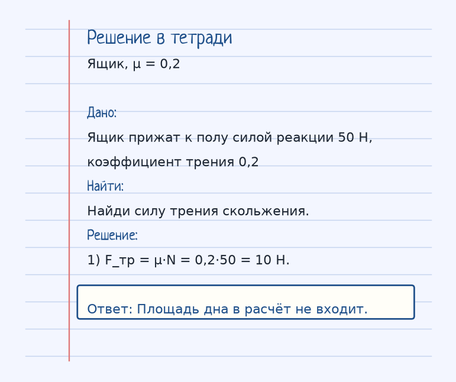
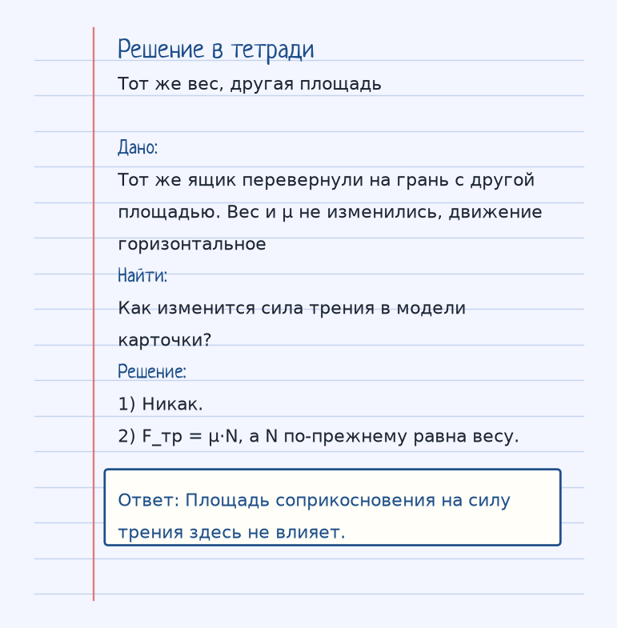

Тема «Сила трения»: физический смысл, единицы величин, типичные ошибки и два разобранных примера.
Схема к условию.
Физический смысл
Возникает при соприкосновении поверхностей и препятствует движению. Зависит от материала и силы давления (веса). Не зависит от площади соприкосновения.
Трение появляется там, где поверхности соприкасаются и одна норовит скользить по другой. Сила трения направлена против этого скольжения. В простой школьной формуле F_тр = μ·N коэффициент μ берёт на себя материал и шероховатость, а N — сила, с которой поверхности прижаты.
В обычной задаче на горизонтальном поле N по модулю равна весу: сильнее прижал — сильнее трение. Поэтому тяжёлый шкаф сдвинуть труднее лёгкого при том же μ.
Площадь в эту формулу не входит. Широкая лыжа и узкая при том же весе и том же μ дают одну и ту же силу трения в модели карточки. Меняется давление на единицу площади, но не F_тр.
Формула и единицы
F_тр = μ · N
μ — коэффициент трения, N — сила реакции опоры (в простых случаях равна весу).
μ — коэффициент трения (без единицы), N — сила реакции опоры (Н). На горизонтали в простых задачах N равна весу.
Пояснение
Тяжелый шкаф сдвинуть сложнее, чем легкий — сила трения больше.
Тяжёлый шкаф труднее сдвинуть, чем лёгкий: вес больше, N больше, трение больше.
Типичные ошибки
Не умножай трение на площадь. В F_тр = μ·N площади нет. И не направляй трение «вперёд по движению» — оно мешает скольжению.
Разобранные примеры. Решение каждого открывается отдельно.
Разбор 1
Ящик, μ = 0,2
Ящик прижат к полу силой реакции 50 Н, коэффициент трения 0,2. Найди силу трения скольжения.
На схеме только условие.
Порядок записи: данные, единицы СИ, искомая величина, ход решения, ответ.
Дано. Ящик прижат к полу силой реакции 50 Н, коэффициент трения 0,2
В СИ.
Найти. Найди силу трения скольжения.
Решение.
F_тр = μ·N = 0,2·50 = 10 Н.
Площадь дна в расчёт не входит.

Разбор 2
Тот же вес, другая площадь
Тот же ящик перевернули на грань с другой площадью. Вес и μ не изменились, движение горизонтальное. Как изменится сила трения в модели карточки?
На схеме только условие.
Порядок записи: данные, единицы СИ, искомая величина, ход решения, ответ.
Дано. Тот же ящик перевернули на грань с другой площадью. Вес и μ не изменились, движение горизонтальное
В СИ.
Найти. Как изменится сила трения в модели карточки?
Решение.
Никак.
F_тр = μ·N, а N по-прежнему равна весу.
Площадь соприкосновения на силу трения здесь не влияет.

Разбор 3
Коэффициент 0,3
Тело прижато к горизонтальной поверхности силой реакции 40 Н. μ = 0,3. Найдите силу трения скольжения.
На схеме только условие.
Порядок записи: данные, единицы СИ, искомая величина, ход решения, ответ.
Дано. μ = 0,3, N = 40 Н
В СИ.
Площадь в формулу не входит.
Найти. Fтр
Решение.
Fтр = μ N = 0,3·40 = 12 Н.
12 Н, против скорости.
Разбор 4
Коэффициент 0,5
N = 20 Н, μ = 0,5. Найдите силу трения скольжения.
На схеме только условие.
Порядок записи: данные, единицы СИ, искомая величина, ход решения, ответ.
Дано. μ = 0,5, N = 20 Н
В СИ.
Единицы СИ.
Найти. Fтр
Решение.
Fтр = 0,5·20 = 10 Н.
10 Н.
Разбор 5
Четверть
μ = 0,25, N = 80 Н. Найдите Fтр.
На схеме только условие.
Порядок записи: данные, единицы СИ, искомая величина, ход решения, ответ.
Дано. μ = 0,25, N = 80 Н
В СИ.
0,25 · 80 = 20.
Найти. Fтр
Решение.
Fтр = 20 Н.
20 Н.
Разбор 6
Площадь
Трение скольжения 12 Н. Тело перевернули на грань с другой площадью, N и μ не изменились. Как изменится Fтр в школьной формуле?
На схеме только условие.
Порядок записи: данные, единицы СИ, искомая величина, ход решения, ответ.
Дано. N и μ те же
В СИ.
Площади в Fтр = μ N нет.
Найти. Изменение Fтр
Решение.
Формула не содержит площади.
Сила трения останется 12 Н.
Не изменится.
Разбор 7
Масса и трение
На горизонтали N = mg. m = 4 кг, g = 10 м/с², μ = 0,2. Найдите силу трения скольжения.
На схеме только условие.
Порядок записи: данные, единицы СИ, искомая величина, ход решения, ответ.